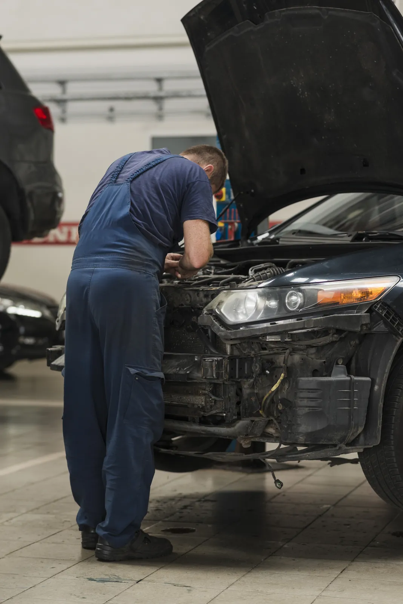

Siniestros
Aquí te explicamos cómo gestionar un siniestro y qué pasos seguir para presentar un reclamo de manera efectiva.
Qué Hacer en Caso de Siniestro
- 1. Verifica la seguridad: Asegúrate de que tú y los demás estén a salvo. Si es necesario, llama a emergencias.
- 2. Documenta el incidente: Toma fotos del lugar, de los vehículos involucrados, y de cualquier daño visible.
- 3. Intercambia información: Recoge los datos de contacto y del seguro de los otros involucrados.
- 4. Notifica a la policía: En caso de un accidente, es recomendable hacer un informe policial.
- 5. Contacta a nuestra aseguradora: Reporta el siniestro a nuestro servicio de atención al cliente lo antes posible.

Documentación Necesaria
Para procesar tu reclamo, asegúrate de tener la siguiente documentación lista:
- Informe policial (si corresponde)
- Fotografías del accidente y los daños
- Datos de los involucrados
- Copia de tu póliza de seguro
- Cualquier otro documento relevante
Proceso de Reclamación
El proceso de reclamación consta de los siguientes pasos:
- Reporte del Siniestro: Comunícate con nosotros para reportar el siniestro.
- Análisis del Reclamo: Nuestro equipo revisará la documentación y realizará una investigación.
- Decisión: Te informaremos sobre la aceptación o rechazo del reclamo.
- Indemnización: Si se aprueba, se procederá con el pago correspondiente según tu póliza.